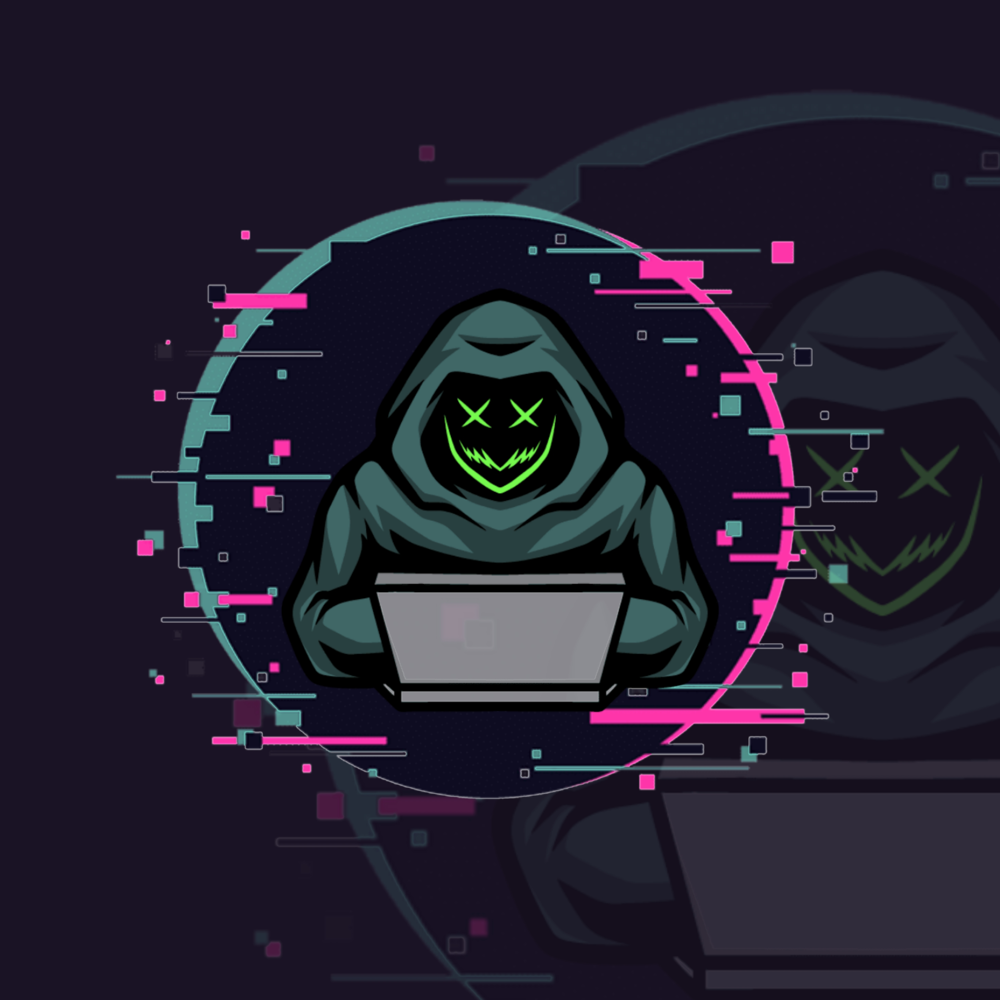
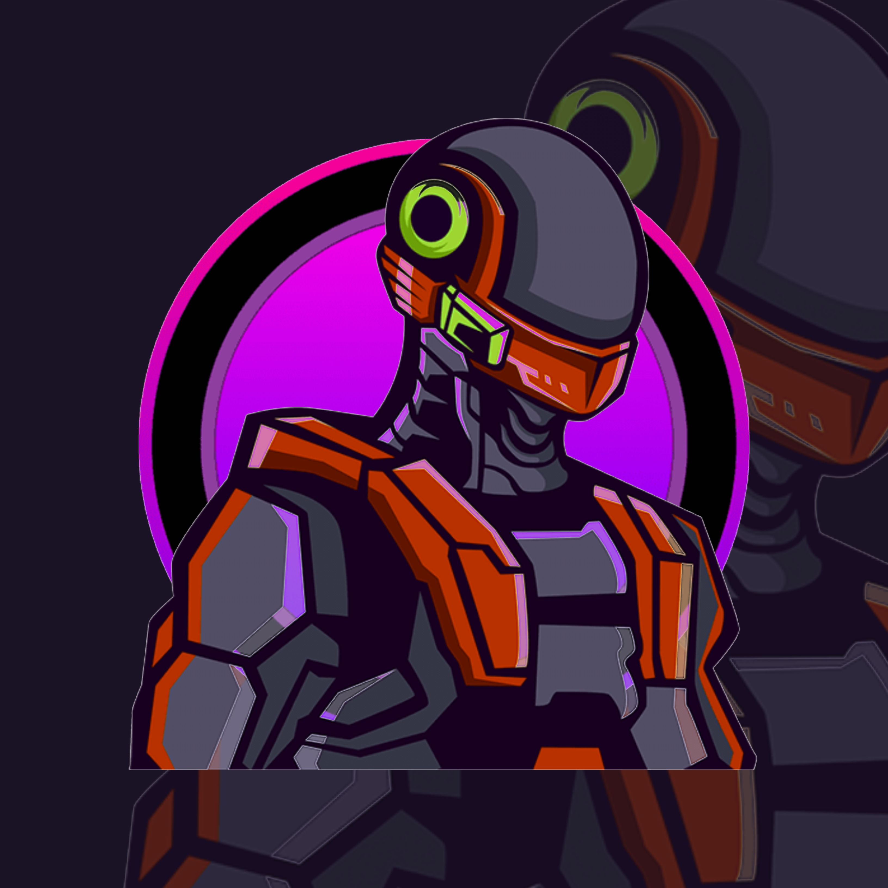

Release

PWNET
BlackTrack PWN NET is an edition of BlackTrack that focuses on pentesting Web Applications
as well as focusing on lab tests like CTFs and such.
Status: Development - discontinued
as well as focusing on lab tests like CTFs and such.
Status: Development - discontinued
Standard
BlackTrack standard edition is a mixed BlackTrack edition of PWN NET and also NetStation, the tools are also various, you should explore in this edition!.
Status: Available - Reog
Status: Available - Reog

NetStation
BackTrack NetStation edition Is a BackTrack edition that focuses on networks and wireless, such as routers, printers, bluetooth and others related to local network issues.
Status: Available - 2023.a
Status: Available - 2023.a